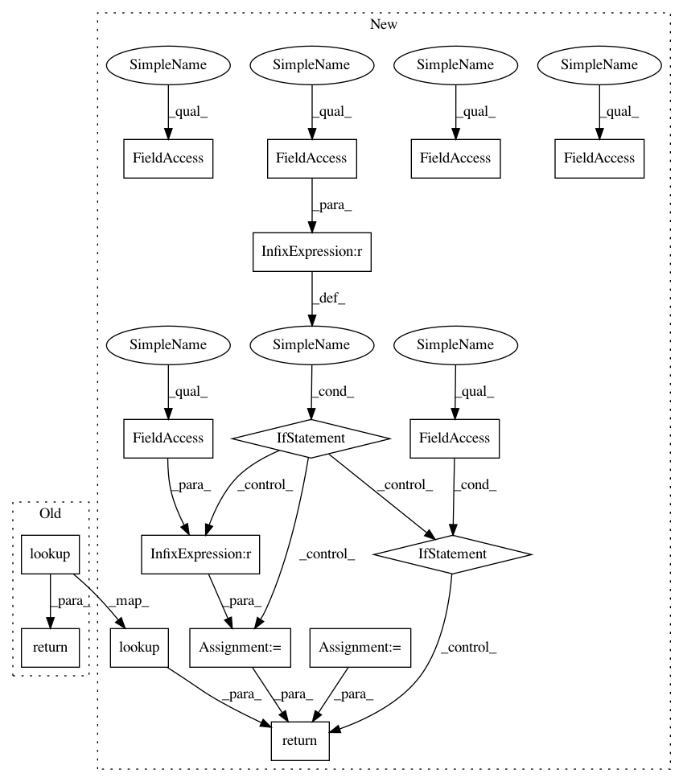

b46fa00aa4256914240cb154b910bebfaf1693d6,tensorflow/python/keras/layers/preprocessing/index_lookup.py,IndexLookup,call,#IndexLookup#Any#,379
Before Change
def call(self, inputs):
if self._key_dtype == dtypes.int64 and inputs.dtype == dtypes.int32:
inputs = math_ops.cast(inputs, dtypes.int64)
return self._table_handler.lookup(inputs)
def _use_v1_apis(self):
return False
After Change
self.set_vocabulary(updates[_VOCAB_NAME])
def call(self, inputs):
if not self.max_tokens:
raise ValueError("You must set the layer"s vocabulary before calling it. "
"Either pass a `vocabulary` argument to the layer, or "
"call `layer.adapt(dataset)` with some sample data.")
if self._key_dtype == dtypes.int64 and inputs.dtype == dtypes.int32:
inputs = math_ops.cast(inputs, dtypes.int64)
lookup_result = self._table_handler.lookup(inputs)
if self.output_mode == INT:
return lookup_result
binary_output = (self.output_mode == BINARY)
if self.sparse:
return category_encoding.sparse_bincount(
lookup_result, self.max_tokens, binary_output)
else:
return category_encoding.dense_bincount(
lookup_result, self.max_tokens, binary_output)
def _use_v1_apis(self):
return False
In pattern: SUPERPATTERN
Frequency: 3
Non-data size: 16
Instances
Project Name: tensorflow/tensorflow
Commit Name: b46fa00aa4256914240cb154b910bebfaf1693d6
Time: 2020-11-18
Author: fchollet@google.com
File Name: tensorflow/python/keras/layers/preprocessing/index_lookup.py
Class Name: IndexLookup
Method Name: call
Project Name: tensorflow/tensorflow
Commit Name: ff9c138639f6a0623b13ad4d75003ae024fa85ca
Time: 2020-11-18
Author: gardener@tensorflow.org
File Name: tensorflow/python/keras/layers/preprocessing/index_lookup.py
Class Name: IndexLookup
Method Name: call
Project Name: tensorflow/tensorflow
Commit Name: b46fa00aa4256914240cb154b910bebfaf1693d6
Time: 2020-11-18
Author: fchollet@google.com
File Name: tensorflow/python/keras/layers/preprocessing/index_lookup.py
Class Name: IndexLookup
Method Name: call
Project Name: tensorflow/tensorflow
Commit Name: 8ee4ce6931a92fc0865d64a1c41b84a23d1ed351
Time: 2020-11-19
Author: fchollet@google.com
File Name: tensorflow/python/keras/layers/preprocessing/index_lookup.py
Class Name: IndexLookup
Method Name: call